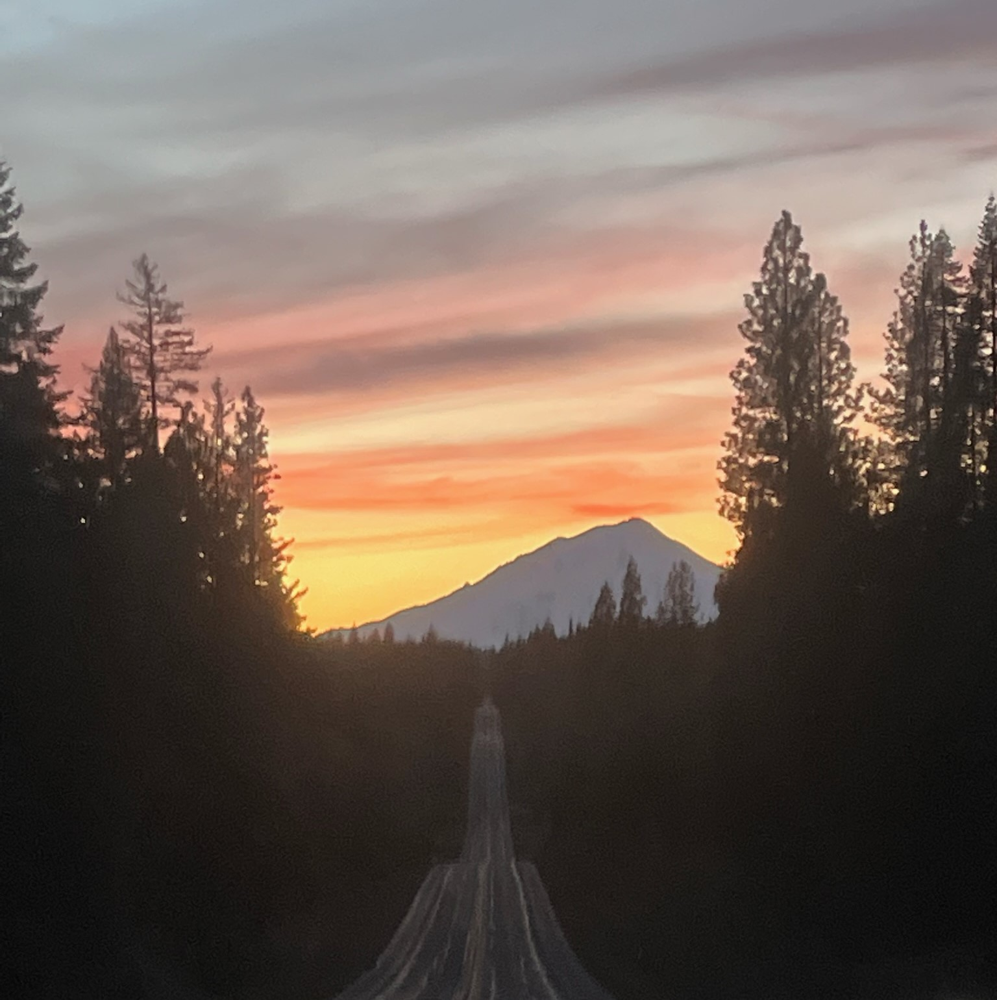
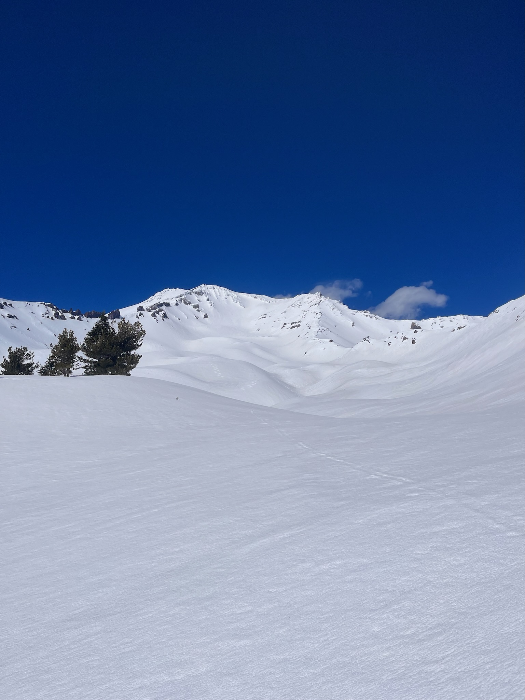

Climbing Mount Shasta
It was a foggy morning in March in Northern California, and I was on a mission. As a vagabond ski worker and rock climber, I was always on the move, typically camping in remote areas to access the next big adventure. I wanted a camper top for my 1996 GMC Sierra to make camping easier and more comfortable. I finally found one in the for-sale classifieds. I jumped at the opportunity and drove the five hours from my home in South Lake Tahoe to the Redding area to acquire this useful accessory. I had heard of nearby Mount Shasta already as an area full of powerful spiritual energy, and I decided to make a detour to check it out.
When I arrived in town, new camper shell atop my pickup truck, I could immediately tell it was a hotbed for hippies as well as outdoorsmen of all types. Because of the dense fog, I could not see the enormous mountain that typically looms over the town. I thought maybe I could spend the night in the truck and then scamper up the mountain the following morning. I did have my boots and a winter coat in the truck after all. So I went into the visitor center which was a yurt-like structure in the middle of town. I perused the photos of the mountain and surrounding area and found out about the local guide shop called The Fifth Season.
I went in and inquired about climbing this mountain, and quickly ascertained that it was no small endeavor. They told me no one had climbed it yet this year as the avalanche risk was too high this early in the season, and I would have to wait until April when the snow becomes softer and less likely to slide down and bury me. I decided to go back home as there was a blizzard blowing in. Driving home on the deserted roads on a snowy night I also realized I should probably bring a buddy to do this with.
At 14,180ft high, Mt Shasta is the 2nd tallest peak in the Cascades, and the tallest volcano in California. But it’s not just its height that makes it impressive. Shasta soars nearly 10,000ft over the surrounding valley, making it the 18th most prominent peak in all of North America, and more prominent than any in Colorado.
There’s also lots of lore surrounding Mt Shasta. Stories of Aliens, ghosts, and paranormal activity, Bigfoot, hidden tunnels, and people vanishing. It’s not especially technical to climb, but only about ⅓ of those who attempt to bag the summit walk home successfully, and every year the mountain claims a couple lives. Most of the people who don’t make it have to turn around due to bad weather, so picking a good weather window is essential for a successful summit.
After some planning I put together a team of two other mountaineers. At the time I was working at Heavenly Lake Tahoe so I was around many energetic people who enjoy the mountains. I was able to talk to Brian from ski patrol who had recently attempted Mt Shasta but had to turn back because of deteriorating conditions and a late start.
Kody was someone I met at the local rock climbing gym. We had climbed together in the gym and outdoors on some of Tahoe’s more formidable sport climbing in the Desolation Wilderness. We also lapped the local ski areas such as Kirkwood and Sierra. Kody knew a lot about California’s geology and was studying Environmental Science at the local college. When I told him I wanted to climb Mount Shasta he expressed trepidation at first, cautioning me that it's a serious mountain and needs to be respected as such. Kody said we should bring another person and volunteered his friend Dominic, another avid outdoorsman who worked at an outdoor equipment company near San Francisco, and had lots of useful equipment for this endeavor.
In the coming weeks, we all trained for altitude as best as we could. For Kody and me, it was easy as we already lived at 6200ft, and could easily access running trails above 8000. Dominic did his best to do cardio at sea level to try to boost his endurance for the climb. We eventually settled on April 20th as our Summit date. As it approached, the weather forecast looked very favorable.
On April 19th we all met up in the town of Mt Shasta. Kody wanted to get a jump on the day so he got there before me with Dominic and they picked up the extra touring equipment we needed for the trip. By the time I got there, they had already had a few beers. I had one, and then Kody was excited to show me his new mountain bike, which we took turns riding around the empty main street of town. We went to the grocery store for nothing other than Bananas and some Mt Shasta postcards. I had never bought ten bananas at once before, and I thought it was slightly comical. When I got to the register, the person in front of me was also buying roughly ten bananas and little else. How peculiar.
After that, we began the drive from the town of Mount Shasta up to the trailhead at Bunny Flat. A couple of miles outside of town, the climb begins at 3700ft and continues all the way up to 6950ft, already higher than any mountain on the East Coast, but still over 7200ft below the summit, leaving plenty of climbing for our legs. The trailhead is named after Bunny Flat which used to be the bunny hill of a ski resort that’s now nothing more than a distant memory– Mt Shasta Ski Bowl closed in 1978 after an avalanche damaged the ski lift beyond repair.
We pulled into the parking lot which was surprisingly busy, with perhaps 15 other cars. We found three spots next to each other, and all of us began to prepare to spend a night in our cars. Dominic and I could both sleep in our trucks, while Kody was slightly less comfortable in the back of his station wagon. We all wanted to get right into bed as it was a cold night.

The following morning we rose for breakfast and began cooking some bacon and pancakes on my truck stove. We had fresh coffee and slowly began to ready our packs. As anyone who goes on trips like this will know, getting ready can take a long time. We had to manage our hydration and hunger while packing essentials into our packs. Brian from ski patrol had told me that if we leave by noon we should get into camp at a good time.
We left at around noon or maybe a little later. Immediately I noticed how heavy my pack was. Nearly a gallon of water, skis, cooking supplies, ice axe, avalanche rescue equipment, rope, harness, and more all weighed me down.
Kody had been speaking to a guide in town the day before, while I was still yet to arrive, and had decided that we should take a brief detour from the easiest route, which is straight up a draw called Avalanche Gulch, and follow John Muir ridge for the first several miles so that we could ski down into Avalanche Gulch and get some practice turns in before continuing up the draw that takes us to the crux of the climb.
So, this being decided, we set out up John Muir ridge, which extended like a spur up the side of the mountain. To our left, we could see down into avalanche gulch, which was probably about two miles wide and extended like a chute up almost to the summit. Once we could go no further up the ridge, we took the skins off our skis, put the bindings in downhill mode, and skied a nice line in virgin snow down into the gulch.
We still had miles to go to reach camp. Helen Lake, a glacier popular for camping, is situated about halfway between the trailhead and the summit, at an elevation of 10,400 feet. We were already feeling the fatigue and had only gained about 1000ft.
As the afternoon dragged on, we started to realize we might not get into camp before dark. We could distinguish Helen Lake as a large mound miles ahead but as we got closer, it seemed to get farther away. We had misjudged the scale of the mountain.
Every time we stopped to admire the landscape it was overwhelmingly beautiful.
We could see a natural forest fire burning in the valley below, creating a long plume of smoke rolling across the valley. We could see the two or three traffic lights in town blinking back and forth.
After the sun went down, the snow began to ice over. What was previously some squishy corn snow turned into an ice sheet. We were exhausted already, the slope was getting steeper, and our skins were no longer gripping the snow. To make matters worse, we could no longer perform kick turns because the surface was frozen over.
Kody’s skis became coated in ice and failed entirely so he had to stow his skis and switch to crampons. Because my gear was still working and I was carrying the tent, I decided to press onwards to reach the campsite so I could start setting up the tent. Unable to comfortably turn so high up on the slope, I continued on a rightward tack, steeper and steeper on the slick snow. I began to feel a true sense of fear. What if we were in over our heads? Is this how people die?
At 8:40 p.m., well after sundown, I made it to Helen Lake and quickly set up the tent. It was comforting to see there was another tent already set up there. We weren’t the only ones up on this vast mountain that is over 15 miles across, in the heart of the 60 square mile Mt Shasta Wilderness. About an hour later Kody and Dominic showed up on crampons. They had been fighting with the gear some 600 feet below while I was finishing the climb.
I unfurled my ultralight backpacking pad, only about five feet long, and climbed into my sleeping bag. The snow underneath was cold but comfortable. It was my first time sleeping on a glacier.
That morning we slept in, and we needed it, we were sore and depleted from yesterday's climb. We saw off Dominic for his ski down and then spent the day being lazy, napping, eating, and melting snow to fill our canteens. Around 2 p.m. we encountered a park ranger trekking up on skis, dangerously late in the day. He seemed completely unconcerned. We talked to him and learned a lot about what we needed to do the next day. He was going up to do a safety check and make sure everyone came down before it was too late in the day.
We decided to wake up at 2:55 a.m. so we could reach the summit by noon. By the time we had our skis tied onto our packs, our gear all ready, and breakfast made, it was already 4:30 and we could see a brave climber about a thousand feet higher than us, only visible by his headlamp, occasionally changing direction as he tacked back and forth up the face of Mt Shasta. Brian from ski patrol had warned me about falling rock and ice from the palisades above us. This is what caused him to turn around as they began to warm up in the afternoon. With this in mind, we started up the 2000ft sheer slope to the top of Avalanche Gulch.
Every step we had to kick our crampons into the snow. It was a little punchy and windblown, so there was a surface that would give way every time we pushed into it. We also had to carry our ice axes with us in case of a fall. We had studied the process of self-arresting to remedy a slide down a snowy slope.
Once we got some height over Helen Lake, the wind picked up. Furious gusts shrieked past my helmet and goggles. They brought chunks of ice in the pea-to-golfball size range. When we heard a powerful gust coming, the only thing to do was to slam the ice axe into the snow in front of our faces and get as close to the snow as possible and wait as the howling wind hurled pieces of the mountain at us, exploding off the tops of our helmets. After the gust abated, progress would continue, slowly kicking holes into the snow as we inched up the mountain
About halfway up Avalanche Gulch, the sun came out, and the wind began to calm down, much to my relief. I was worried that we too would be forced to turn around. From here, our tent was just a dot on a snowy expanse. About five other tents had popped up since we first arrived. Beyond camp was town, and opposite the lake in the middle of the valley, we could see Castle Craig, a dramatic granite dome that looked small from our unrivaled height.
The top of Avalanche Gulch was marked by the Thumb. From camp, it looked like a normal-sized boulder, but as we got closer, it revealed itself to be closer in size to a large house or apartment building. Once we crested this, we knew we could make the summit, even though it was only 12,800ft leaving another 1400 for us to climb. So here we stopped for a protein bar and some water.
What still lay ahead was some traversing, some flat walking, and a segment called Misery Hill. This is where most people turn back. Steep, windy, and exposed, Misery Hill takes the last of your energy not just because of the high altitude but also because you can’t see it from the Thumb, so it surprises you and then humbles you with its unrelenting slope. The snow here was uneven, covered in mounds of ice and sastrugi.
By this point, I was climbing very slowly, and taking rests every few minutes. I had to add my warmest layer, and my hands became very cold, my mittens just weren’t warm enough. Here the wind was steady and every step was a fight. At the top of Misery Hill, it was just a flat half-mile walk to the summit structure, which rose about 200ft above the rest of the peak.
The flat stretch felt so easy compared to climbing, like a stroll in the park. It was a long saddle-shaped plateau, and the wind was roaring across it. The summit towered over the rest of the mountaintop like a bridge on a ship.
The shape seemed completely random and was covered in rime ice. It's easy to see why people think there's an alien spaceship hidden inside the lava tubes of Mt Shasta. It also looked kind of difficult to ascend. We ended up cutting steps into the side and spiraling around the back, before arriving at the tippy top of Mt Shasta.
The wind was certainly still blowing on Misery Hill and over the saddle in between it and the summit, but for some reason up here the air was still and the sun was shining. It was time to celebrate with a nice cigar.
We spent some time up there, enjoying the weather and the accomplishment. It was like an oasis. I could take my gloves off and relax.
Often when you climb a big mountain, the worst part is the realization that now you have to get back down, and it's going to be a lot of work. However, this time, we had taken the initiative to bring our skis with us, so it was nice to know our cars were just a few turns away. We walked back to Misery Hill and put our skis on.
What had taken us all day to ascend, we skied down in eight minutes.
I carved huge turns in the late spring corn, reaching speeds that wouldn't be possible on a crowded ski slope. We stopped back at Helen Lake to pack up the tent and continued, heavier now with all the gear on our backs once again. As we descended the snow got warmer and slushier. Once we got back below the tree line, the scent of fir hit me in the face. The slope got mellow as we continued to bunny flat, but I managed to ski right up to my truck.

At this point, I was drenched in sweat so I changed into some clothes more suited for the altitude. We went back to the same place we had first met up and feasted like kings. I hugged Kody and left, knowing it would be months before I saw him again.